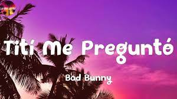
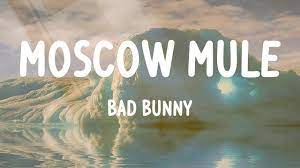

Letras Hace mucho tiempo le hago caso al corazón
Y pasan los día', los mese' pensando en tu olor
Ha llegado el tiempo para usar la razón
Ante' que sea tarde y sin querer me parta en do'
Antes de que salga el sol y hunda el acelerador
Que vaya sin frenos y pierda el control
Nada más seremos do', tú y yo acariciándono'
En medio del tiempo, sin decir adiós
Y solo mírame con esos ojito' lindo'
Que con eso yo estoy bien
Hoy he vuelto a nacer
Hacе tiempo que no agarro a nadie de la mano
Hace tiempo que no envío: "buenos días, te amo"
Pero tú me tiene' enredao, me envolví
Iba por mi camino y me perdí
Mi mirada cambió cuando tus ojos ví
Bye-bye a los culo', ni me despedí
Yo no te busqué, no
Chocamo' en el trayecto
Con tu alma es la que yo conecto
Tranquila, no tiene que ser perfecto, no
Aquí no existe el pecado
Y equivocarse es bonito
Los errore' son placere'
Igual que to' tus besito'
Y solo mírame con esos ojito' lindo'
Que con eso yo estoy bien
Hoy he vuelto a nacer
Y solo mírame con esos ojito' lindo'
Que con eso yo estoy bien
Hoy he vuelto a nacer
Tú y yo, tú y yo, tú y yo (tú y yo, tú y yo)
Tú y yo, tú y yo (tú y yo, tú y yo), tú y yo
Tú y yo, tú y yo
Tú y yo, tú y yo
Yo no me dejo llevar de nadie
Yo solo me dejo llevar de tu sonrisa
Y del lunar cerquita de tu boca
Si yo estoy loco, tú estás loquita
Pero, baby, como tú no hay otra, no
Quiero regalarte girasole'
Ir pa la playa y buscarte caracole'
Cuando estoy contigo, yo no miro el Rolex
Vamo' a bailar 200 cancione'
Nadie me pone como tú me pone'
Mmm, mm-mm, mmm
Mmm, mm-mm, mmm
Yo le hablo a Dio' y tú ere' su respuesta
Aprendí que los momento' lindo' nunca cuestan
Como cuando me regalas tu mirada
Y el sol, su puesta (ey, ey), y el sol, su puesta
Cuando estoy encima de ti, de ti
Mami, yo me olvido de todo, de todo
No hace falta nadie aquí
Solamente tú y yo
Antes de que salga el sol y hunda el acelerador
Que vaya sin frenos y pierda el control
Nada más seremos do', tú y yo acariciándono'
En medio del tiempo, sin decir adiós
Y solo mírame con esos ojito' lindo'
Que con eso yo estoy bien
Hoy he vuelto a nacer
Y solo mírame con esos ojito' lindo'
Que con eso yo estoy bien
Hoy he vuelto a nacer
Me porto bonito
Letras Yeah-yeah-yeah-yeah-yeah-yeah, ey
En la guagua se quedó el olor
De tu perfume
Tú ere' una bellaca, yo soy un bellaco
Eso e' lo que no' une
Ella sabe que está buenota
Y no la presumen
Si yo fuera tu gato
Subiera una foto los vierne' y los lune' (so)
Pa' que to' el mundo vea
Lo rica que tú está', que tú está'
Contigo tengo que apretar
Y en la calle ando suelto
Pero por ti me quito
Si tú me lo pides
Yo me porto bonito
Y subo un selfie pa' que vean
Lo rica que tú está', que tú está'
Las otras tienen que apretar
En la calle ando suelto
Pero por ti me quito
Si tú me lo pide'
Yo me porto bonito
Ey, ey
Tú no ere' bebecita
Tú ere' bebesota
Frikitona, ma', se te nota
Le gustan los trío'
Cuando está en la nota
Si el novio no sirve
De una lo bota
Y waoh, mami
Dime dónde dejo el resume
Sé que te dejaste hace un me'
Y de una de pecho me zumbé
Si quiere' te hago un bebé
O te traigo la' Plan B
Uff, mami, qué rica tú te ve'
Pa' los 2000 escuchaba RBD
Y ahora quiere perreo
Toa' la noche en la pared
Te obsesiono, CBD
Mami, tú ere' élite
No te me limite'
Déjame hacerte
Lo que amerite y te levite
Dale pa'l escondite
No te me arisque'
Que aquí no van a poder llegar lo' satélite'
Mami, sube algo
Dame contenido
Ese culo súbelo má' seguido
Me paso jangueando
A ver si coincido, ey
Y por fin doy contigo
Mai, nuestra' bellaquera'
Nunca la' olvido
Ninguna como tú
A mí me ha complacido
Tú cree' que a toda'
Siempre les digo lo mismo
Quiere chingar
Pero no quiere na' fijo, ey
Pero en confianza me confiesa
Dice que nadie le interesa
Pero cuando sale, se pone traviesa (ey)
Pa' que to' el mundo vea
Lo rica que tú está', que tú está', ey
Contigo tengo que apretar
Y en la calle ando suelto
Pero por ti me quito
Si tú me lo pide'
Yo me porto bonito
Tití Me Preguntó
Letras

Ey, Tití me preguntó
Si tengo muchas novia'
Muchas novia'
Hoy tengo a una, mañana otra
Ey, pero no hay boda
Tití me preguntó
Si tengo muchas novia'
Je, muchas novia'
Hoy tengo una, mañana otra
Me la' vo'a llevar a to'a
Pa' un VIP, un VIP, ey
Saluden a Tití
Vamo' a tirarno' un selfie
Say "Cheese", ey
Que sonrían las que ya les metí
En un VIP, un VIP, ey
Saluden a Tití
Vamo' a tirarno' un selfie
Say "Cheese"
Que sonrían las que ya se olvidaron de mí
Me gustan mucho las Gabriela
Las Patricia, las Nicolle, las Sofía
Mi primera novia en kinder, María
Y mi primer amor se llamaba Thalía
Tengo una colombiana
Que me escribe to' los día'
Y una mexicana que ni yo sabía
Otra en San Antonio que me quiere todavía
Y las de PR que todita' son mía'
Una dominicana que es uva bombón
Uva, uva bombón
La de Barcelona que vino en avión
Y dice que mi bicho está cabrón
Yo dejo que jueguen
Con mi corazón
Quisiera mudarme
Con todas pa' una mansión
El día que me case te envío la invitación
Muchacho, deja eso, ey
Tití me preguntó
Si tengo muchas novia', muchas novia'
Hoy tengo una, mañana otra
Ey, pero no hay boda
Tití me preguntó
Si tengo muchas novia'
Ey, ey, muchas novia'
Hoy tengo una, mañana otra (mañana otra) (rrra)
Tití me preguntó-tó-tó-tó-tó-tó-tó
Tití me preguntó-tó-tó-tó-tó-tó-tó (qué pámpara)
Tití me preguntó-tó-tó-tó-tó-tó-tó
Tití me preguntó-tó-tó-tó
(Pero ven acá, muchacho
¿Y para qué tú quiere' tanta' novia'?)
Me la' vo'a llevar a to'a
Pa' un VIP, un VIP, ey
Saluden a Tití
Vamo' a tirarno' un selfie
Say "Cheese", ey
Que sonrían las que ya les metí
En un VIP, un VIP, ey
Saluden a Tití
Vamo' a tirarno' un selfie
Say "Cheese"
Que sonrían las que ya se olvidaron de mí
Oye, muchacho 'el diablo, azaroso
Suelta ese mal vivir
Que tú tiene' en la calle
Búscate una mujer seria pa' ti
Muchacho 'el diablo, coño
Yo quisiera enamorarme
Pero no puedo
Pero no puedo, eh, eh
Yo quisiera enamorarme
Pero no puedo
Pero no puedo
Sorry, yo no confío, yo no confío
Nah, ni en mí mismo confío
Si quieres quedarte
Hoy que hace frío
Y mañana te va', nah
Muchas quieren mi baby gravy
Quieren tener mi primogénito, ey
Y llevarse el crédito
Ya me aburrí
Hoy quiero un totito inédito, je
Uno nuevo, uno nuevo, uno nuevo, uno nuevo (ey)
Hazle caso a tu amiga
Ella tiene razón
Yo vo'a romperte el corazón
Vo'a romperte el corazón
Ey, no te enamores de mí
No te enamores de mí
Sorry, yo soy así, ey
No sé por qué soy así
Hazle caso a tu amiga
Ella tiene razón
Yo vo'a romperte el corazón
Vo'a romperte el corazón
No te enamores de mí
No te enamores de mí
Sorry, yo soy así
Ya no quiero ser así, no
Moscow Mule
Letras

Si yo no te escribo
Tú no me escribe', ey
Si tú quieres, te busco
Yo sé dónde tú vive'
Quizá hoy está aborreci'a
Pero por dentro tú tiene' alegría
Si quieres te la saco
Dos trago' y sabes
Que me pongo bellaco
No somo' na'
Pero estamo' envuelto' hace rato
WhatsApp sin el retrato
No guarda mi contacto (ey, ey, ey, ey)
Pero se la saco
Dos trago' y sabes
Que me pongo bellaco
No somo' na'
Pero estamo' envuelto' hace rato, oh-oh
WhatsApp sin el retrato
No guarda mi contacto-to
Todo e' underwater
Baby, vamo' pa'l cuarto quarter
En la Uru' comiéndono' el pâté
Te vo'a dar duro pa' que no me compare'
Ey, cuidao' con ese mahón
Que se va a romper (ey)
Ese booty lo va a romper (ey)
Yo no sé si yo te vuelvo a ver
Si mañana me vo'a perder
Tú ere' una player
Me hiciste un crossover
Esta ve' metiste
Me diste game over, eh, eh
Porque no puedo olvidar
El perreo aquel
Que se fue viral
Dime si mañana te va' a quedar
Después de la alarma te lo voy a dar
Ey, hoy tú no va' a trabajar, je, no
Si quieres te la saco
Dos trago' y sabes
Que me pongo bellaco
No somo' na'
Pero estamo' envuelto' hace rato
WhatsApp sin el retrato
No guarda mi contacto
Pero se la saco
Dos trago' y sabes
Que me pongo bellaco
No somo' na'
Pero estamo' envuelto' hace rato
WhatsApp sin el retrato
No guarda mi contacto
Me gustan así
Piquetúa
Mami, qué rica te ve' 'esnu'a
Quizás no sentiste lo que yo sentí
Pero aún te debo una noche en la suite
Pa' darte tabla
Dale, mami, habla
Tú ere' una diablona
No te haga'
Pa' darte tabla
Dale, mami, habla
Tú ere' una diablona
No te haga'
No, no, no, no (no, no, no, no)
No, no, no, no (no, no, no, no)
No, no, no, no (no, no, no, no)
Ey, yo no sé tú
Pero yo quisiera amanecer 'esnu'
En una playa por Balí, si no, Cancún
Pide otro Moscow Mule (ey)
Que ando en nota, nota
Ven y choca
Conmigo que se joda
Baby, tú 'tás grandota
Pero hoy ando en nota, nota
Ven y choca
Conmigo que se joda, eh
Que se joda, ey
Mami, tú quieres perreo
Tú quieres perreo
Tú quieres bellaqueo
Tú quieres bellaqueo
Mami, tú quieres perreo
Tú quieres perreo
Tú quieres bellaqueo